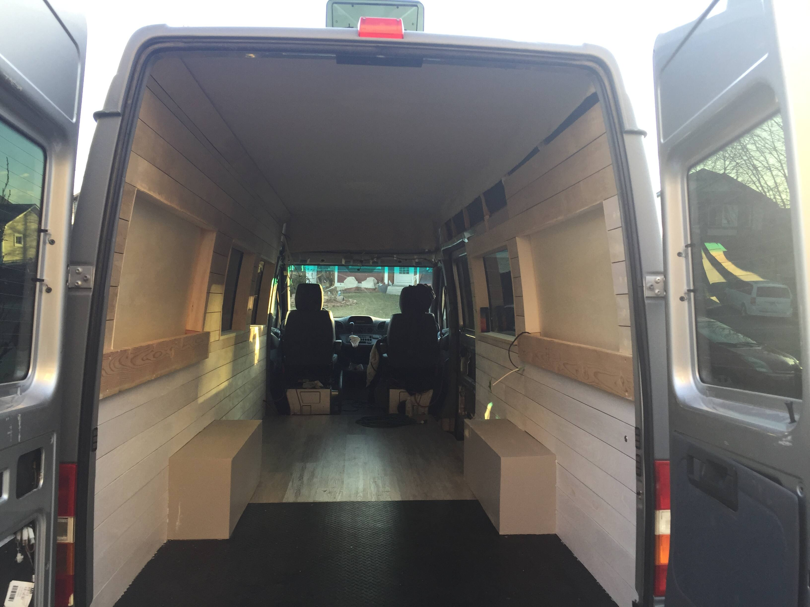
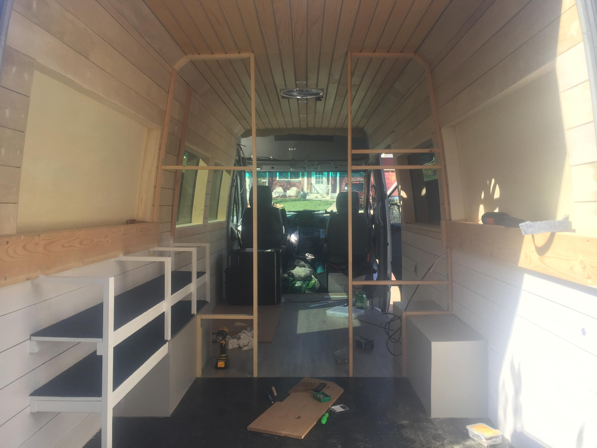
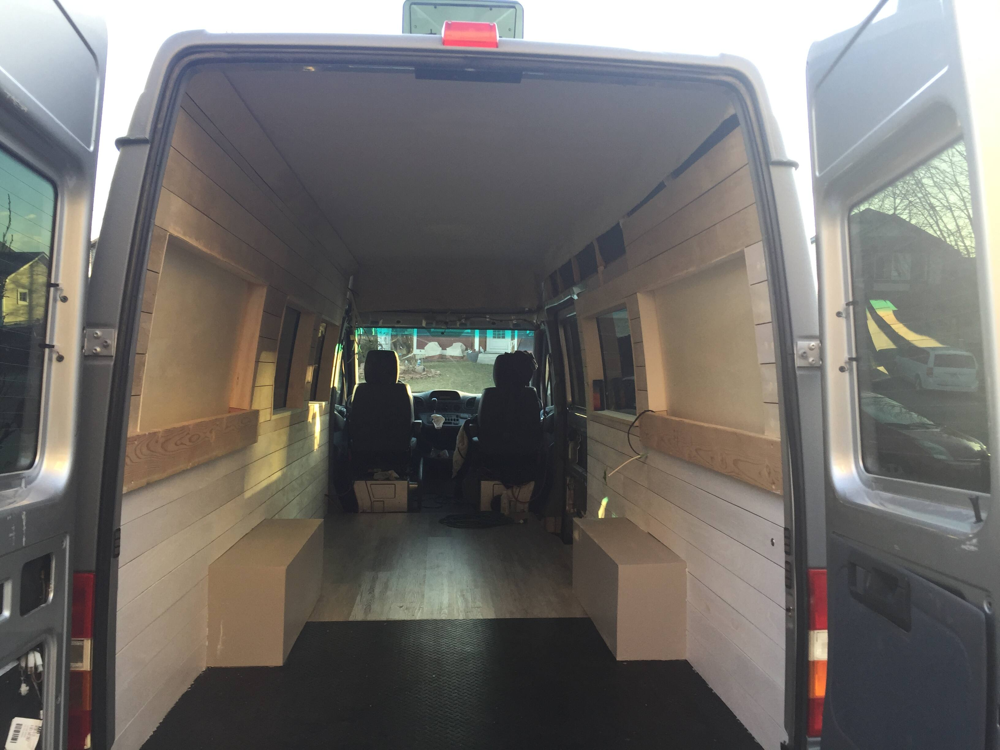
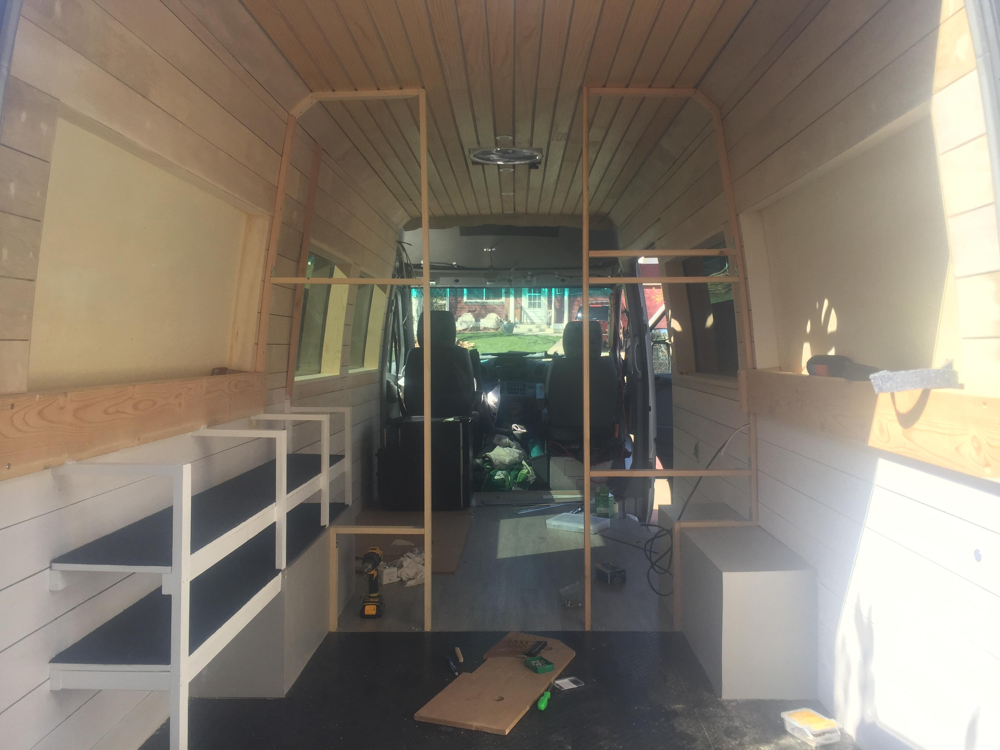
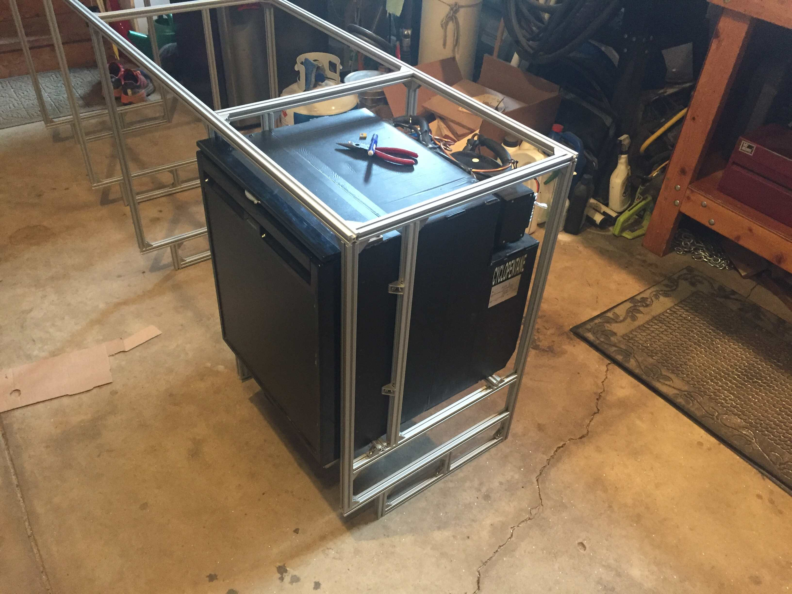
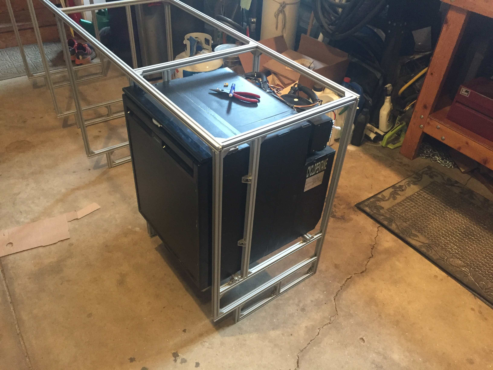

 



Hanging out and enjoying the luxury of the van near Jackson on our first trip.
A view of the back of the van with our bed raised up high to give lots of storage underneath. Having our bikes fit underneath was a design consideration here.
The shell of the interior after we pulled out all the seats, headliner, AC unit etc.
Putting in some foam insulation under the floor. Above this we put 1/2" of OSB, and then vinyl flooring on top.
That vinyl flooring all in, looks nice!
A pretty exciting task right of the bat was cutting out holes in the roof to put in vent fans.
A lot of lap sealant made sure we wouldn't have any leaks.
While we were at it on the roof we installed some racks from 8020 and mounted the two solar panels.
The framing took a lot longer than I would've liked, especially because it looks so simple after the fact. Nothing in the van is straight or square, so figuring out all the contours took a while.
We decided on using plywood slats for the walls. We ripped a couple of sheets down on a table saw into 3 inch strips. Steps not shown before this included putting insulation everywhere it would fit, and putting in wiring for all the lights and outlets.
The windows were especially difficult to frame out nicely. We blocked out the rear windows for the bed area.
The walls completed.
I really like how the ceiling turned out with these thin strips of wood.
Here we put in a storage rack for skis on the left and the framing for closet and divider is coming together.
Sometimes I need to mess around with a 3D model to suss out a design. A bit overkill for this, but I mocked up the kitchen area and frame in Solidworks.
Excited to have an excuse to pull out the CNC machine, I made jigs to cut out the holes in the countertop. I was too nervous to have the CNC cut them out on the expensive butcher block directly...
The sink in and the slot for the stove cut out on the left.
I've normally cut 8020 with a hack saw and miter box, but having access to a miter saw with a metal blade made this a breeze. I assembled the frame and test fit the fridge (another killer deal my partner found) outside of the van.
Installing the frame. The wires on the right are for the solar panels and battery.
The countertop installed. Really happy how this turned out.
Next we put in some drawers and cabinets. Under the sink is where we stored water (12 gallons of fresh, 6 gallons of waste) plus the water pump and water filters.
A view of the storage and bed area before putting in the bed. Again, up high to fit the bikes.
The next project to tackle was one of my favorites for the whole van. Seeing how expensive big lithium battery packs are I decided to put my own together. I found a webpage that sells bulk laptop batteries, and instead of spending $3,000 on batteries (Battle Born for example) we spent $300. Here we're extracting the cells from the housings.
Next up was to charge all the cells up to the same voltage level to allow for safe assembly of the whole pack. I also measured the internal resistance of each cell to make sure none were unhealthy.
Assembling the cells with these convenient snap-together brackets.
If you don't have a tool make it! I built this spot welder to weld the nickel strips to all of the cells. I used an automotive relay to short a car battery across the welding leads. In order to adjust the pulse width I used an arduino driving a MOSFET, with a nice little screen and potentiometer for ease of use.
The final battery pack. There are 300 18650 cells in the pack wired into 3 main cells on 100 each, then in series to make a 12V pack with a 300Ah capacity.
The electrical system mostly complete. The battery pack on the bottom, a solar charger and alternator charger, and various fuses and connections.
About this project
My partner and I spent most of our free time (COVID-era) in the latter half of our Senior year of college building out this 2004 Dodge Sprinter. My partner found a killer deal on this old passenger van that had just been sitting in a lot for many years (low miles too!). As is standard with many of my larger scale projects, this one took much longer than anticipated and in hindsight we should've spent less time and gotten on the road sooner.
This project had a great combination of processes, and a highlight was building a big battery pack from recycled laptops.